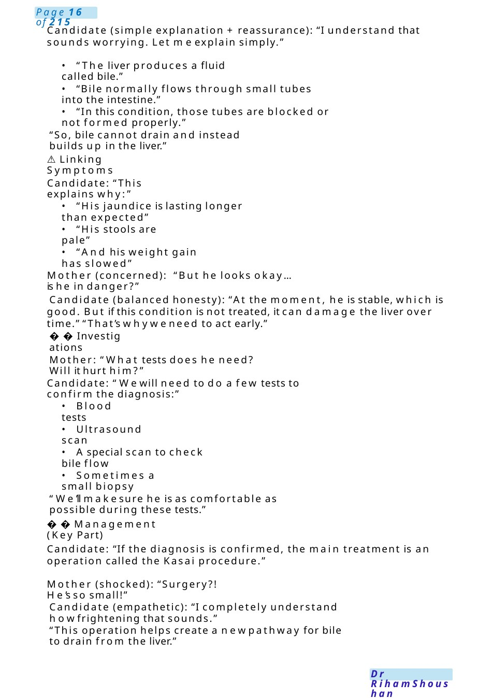
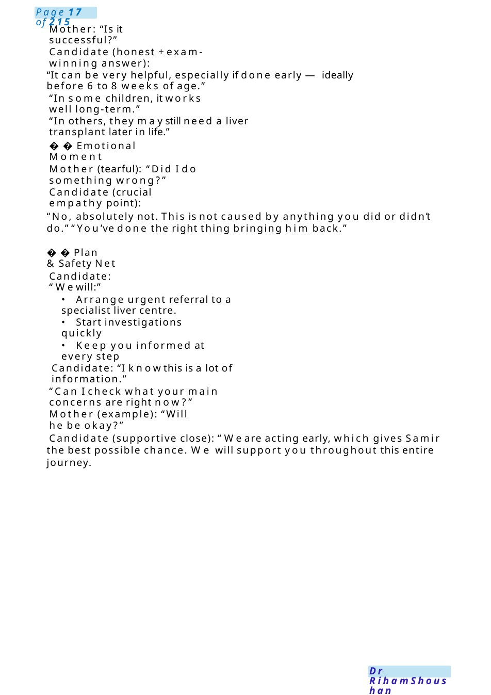
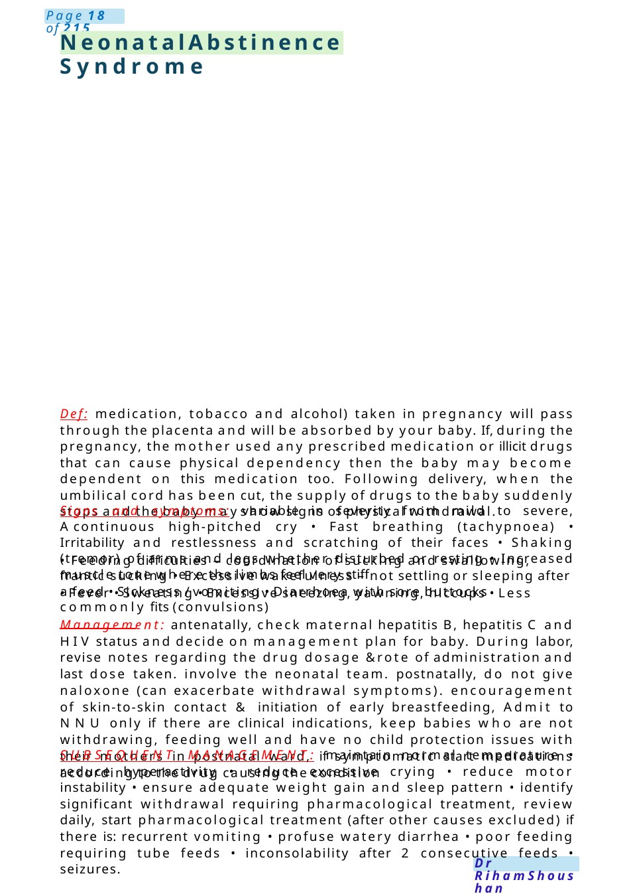

Extrahepatic Biliary Atresia
MRCPCH Role-Play Scenario Extrahepatic Biliary Atresia “Hello Ms. Katena, I’m one of the doctors looking after Samir. I understand you’ve been worried about his jaundice.”
Scenario Summary
MRCPCH Role-Play Scenario Extrahepatic Biliary Atresia “Hello Ms. Katena, I’m one of the doctors looking after Samir. I understand you’ve been worried about his jaundice.”
Full Original Scenario

Extrahepatic Biliary Atresia
MRCPCH Role-Play Scenario Extrahepatic Biliary Atresia
Station: Communication with parent
Child: Samir, 44 days old
Mother: Ms. Katena
Opening
Candidate:
“Hello Ms. Katena, I’m one of the doctors looking after Samir. I understand you’ve been worried about his jaundice.”
“Before I explain, can I ask what you’ve been told so far?”
Mother (prompt): “They told me it’s just breast milk jaundice... nothing serious.”
Candidate (acknowledge +transition):
“I understand, and that is a common cause of jaundice. But now, with Samir’s ongoing symptoms, we are concerned there maybe a different underlying cause.”
Explaining the Diagnosis
Candidate: “We are worried Samir mayhave a condition called extrahepatic biliary atresia.”Mother (interrupts, anxious): “What does that mean? Is it dangerous?!”

Candidate (simple explanation + reassurance): “I understand that sounds worrying. Let meexplain simply.”
- “The liver produces a fluid called bile.”
- “Bile normally flows through small tubes into the intestine.”
- “In this condition, those tubes are blocked or not formed properly.”
“So, bile cannot drain and instead builds up in the liver.”
- ️Linking Symptoms
Candidate: “This explains why:”
- “His jaundice is lasting longer than expected”
- “His stools are pale”
- “And his weight gain has slowed”
Mother (concerned): “But he looks okay...is he in danger?”
Candidate (balanced honesty): “At the moment, he is stable, which is good. But if this condition is not treated, it can damage the liver over time.” “That’s whyweneed to act early.”
Investigations
Mother: “What tests does he need? Will it hurt him?”
Candidate: “Wewill need to do a few tests to confirm the diagnosis:”
- Blood tests
- Ultrasound scan
- Aspecial scan to check bile flow
- Sometimes a small biopsy
“We’ll makesure he is as comfortable as possible during these tests.”
Management (Key Part)
Candidate: “If the diagnosis is confirmed, the main treatment is an operation called the Kasai procedure.”
Mother (shocked): “Surgery?! He’s so small!”
Candidate (empathetic): “I completely understand howfrightening that sounds.”
“This operation helps create a newpathway for bile to drain from the liver.”

Mother: “Is it successful?”
Candidate (honest +exam-winning answer):
“It can be very helpful, especially if done early —ideally before 6 to 8 weeks of age.”
“In some children, it works well long-term.”
“In others, they maystill need a liver transplant later in life.”
Emotional Moment
Mother (tearful): “Did I do something wrong?”
Candidate (crucial empathy point):
“No, absolutely not. This is not caused by anything you did or didn’t do.” “You’ve done the right thing bringing him back.”
Plan &Safety Net
Candidate: “Wewill:”
- Arrange urgent referral to a specialist liver centre.
- Start investigations quickly
- Keep you informed at every step
Candidate: “I knowthis is a lot of information.”
“Can I check what your main concerns are right now?”
Mother (example): “Will he be okay?”
Candidate (supportive close): “We are acting early, which gives Samir the best possible chance. We will support you throughout this entire journey.

Neonatal Abstinence Syndrome
Def: medication, tobacco and alcohol) taken in pregnancy will pass through the placenta and will be absorbed by your baby. If, during the pregnancy, the mother used any prescribed medication or illicit drugs that can cause physical dependency then the baby may become dependent on this medication too. Following delivery, when the umbilical cord has been cut, the supply of drugs to the baby suddenly stops and the baby mayshow signs of physical withdrawal.
Signs and symptoms: variable in severity from mild to severe, Acontinuous high-pitched cry • Fast breathing (tachypnoea) • Irritability and restlessness and scratching of their faces • Shaking (tremor) of arms and legs whether disturbed or resting • Increased muscle tone where the limbs feel very stiff
- Feeding difficulties – coordination of sucking and swallowing, frantic sucking • Excessive wakefulness – not settling or sleeping after a feed • Sickness / vomiting • Diarrhoea with sore buttocks
- Fever • Sweating • Excessive sneezing, yawning, hiccups • Less commonly fits (convulsions)
Management: antenatally, check maternal hepatitis B, hepatitis C and HIV status and decide on management plan for baby. During labor, revise notes regarding the drug dosage &rote of administration and last dose taken. involve the neonatal team. postnatally, do not give naloxone (can exacerbate withdrawal symptoms). encouragement of skin-to-skin contact & initiation of early breastfeeding, Admit to NNU only if there are clinical indications, keep babies who are not withdrawing, feeding well and have no child protection issues with their mothers in postnatal ward, if symptomatic start medications according to the drug causing the condition
SUBSEQUENT MANAGEMENT: maintain normal temperature • reduce hyperactivity • reduce excessive crying • reduce motor instability • ensure adequate weight gain and sleep pattern • identify significant withdrawal requiring pharmacological treatment, review daily, start pharmacological treatment (after other causes excluded) if there is: recurrent vomiting • profuse watery diarrhea • poor feeding requiring tube feeds • inconsolability after 2 consecutive feeds • seizures.